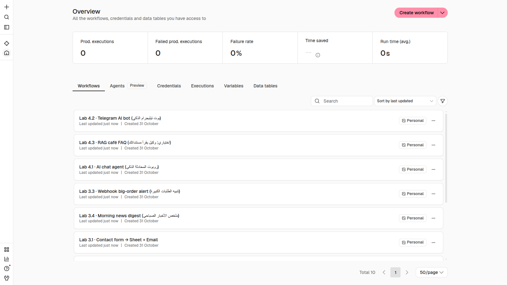
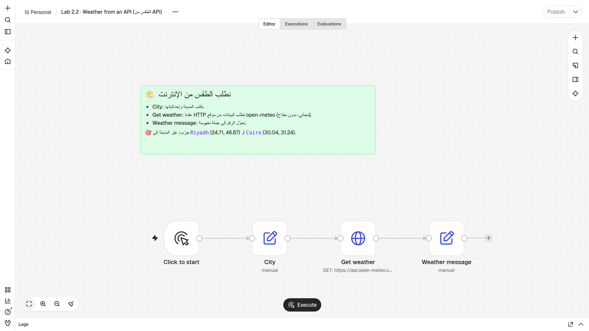
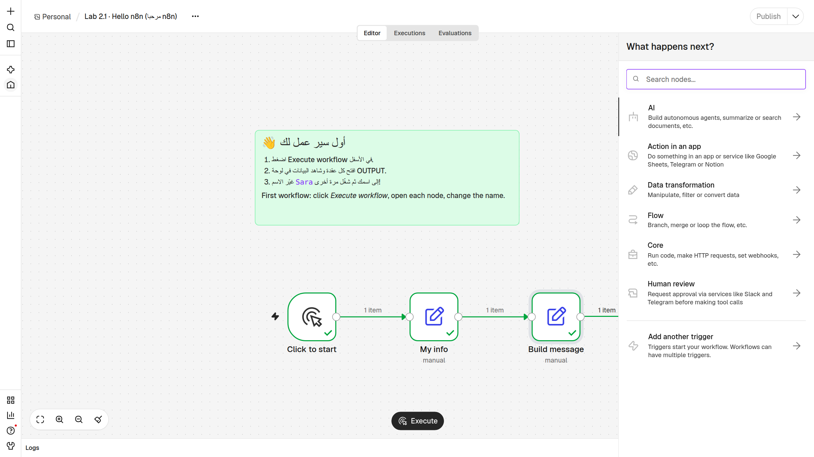
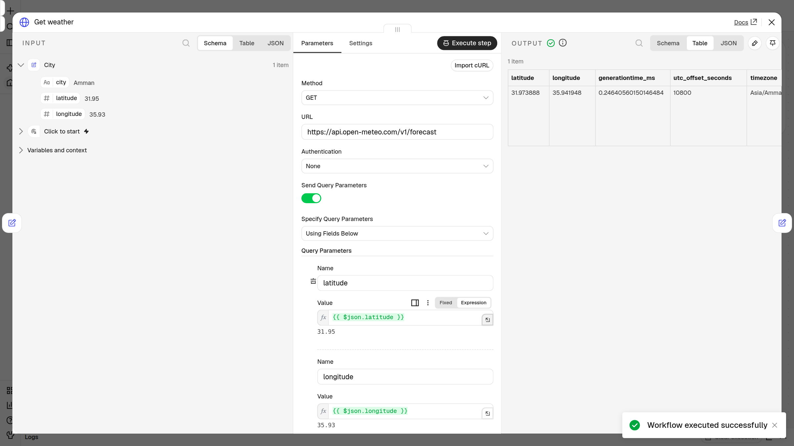
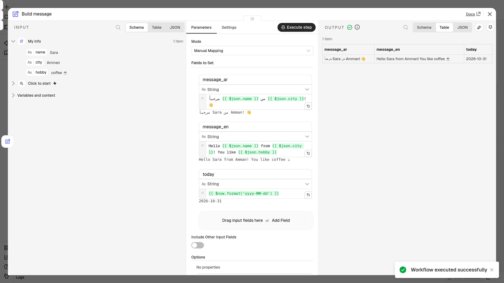
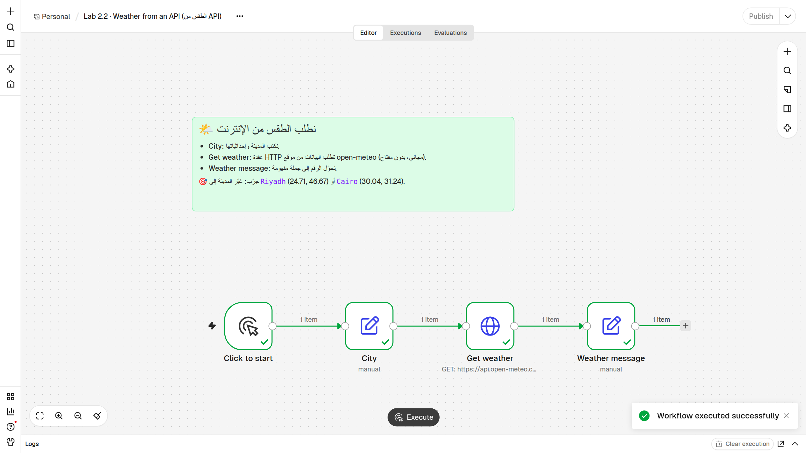
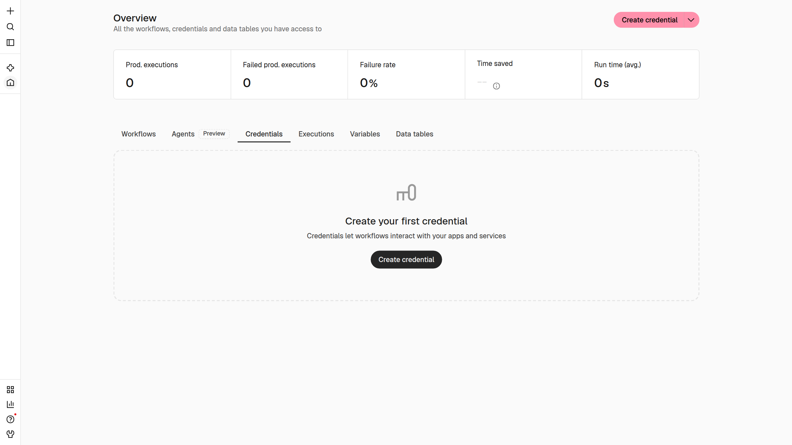
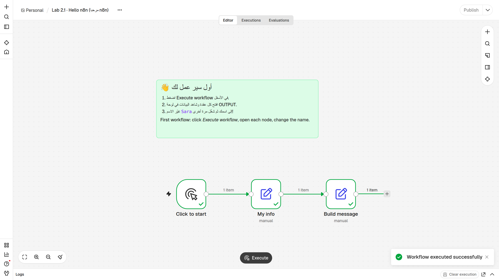

أهلاً بكم في الحصة الثانية! في الحصة الأولى تعلّمنا الأفكار الكبيرة: الأتمتة، النادل، الاستمارة، وجرس الباب. اليوم نفتح n8n لأول مرة ونلمسه بأيدينا. بنهاية الحصة سيكون عند كل واحد منكم ثلاثة سير عمل تعمل على حسابه: رسالة ترحيب باسمه، طقس حقيقي من الإنترنت، وسير عمل بناه بنفسه من الصفر. انظروا إلى الرسم في الأسفل: ثلاث قطع صغيرة موصولة بأسلاك — هذا بالضبط ما سنبنيه اليوم. سؤال سريع للقاعة: من أنشأ حساب n8n Cloud قبل الحصة؟ ارفعوا أيديكم. من لم ينشئه بعد، لا مشكلة أبداً، سنفعلها معاً خطوة بخطوة بعد قليل. لنبدأ بخريطة اليوم.
TODAY
Today's Map
خريطة اليوم: ست محطات
🔁
تذكير + ما هو n8n؟Recap & Start
من الحصة 1 إلى حسابك على Cloud.
🧭
جولة في المحرّرEditor Tour
أين كل زر؟ وماذا يفعل؟
🧱
العُقَد والمشغّلاتNodes & Triggers
قطع LEGO… ومتى تبدأ؟
📦
البيانات والتعبيراتItems & Expressions
كيف تنتقل المعلومة؟ وكيف نملأ الفراغ؟
🛠️
نبني معاًBuild Live
أول سير عمل… ثم الطقس من الإنترنت.
🧪
دورك!Lab 2
ثلاثة تمارين على حسابك.
هذه خريطة اليوم. سنمرّ على ست محطات. أولاً تذكير سريع بالحصة الأولى ثم ندخل إلى n8n وننشئ الحساب. بعدها جولة في المحرّر: أين الأزرار وماذا يفعل كل واحد. ثم نتعرف على العُقَد، وهي قطع الـ LEGO، وعلى المشغّلات التي تقرر متى يبدأ العمل. بعدها أهم فكرة اليوم: كيف تنتقل البيانات من عقدة إلى أخرى، وكيف نستخدم التعبيرات لملء الفراغات. ثم نبني معاً على الشاشة، وفي النهاية دوركم في ثلاثة تمارين. سيكون عندنا استراحة 15 دقيقة في المنتصف تقريباً. لا تقلقوا إن لم تفهموا كل شيء من أول مرة؛ التمارين ستثبّت كل شيء.
PART 1 · RECAP
Class 1 in One Slide
الحصة الأولى في شريحة واحدة
⚡Triggerشيء يحدث
⚙️Stepsخطوات تلقائية
✅Resultنتيجة جاهزة
🧑🍳
النادلAPI
ينقل طلبك للمطبخ ويرجع بالرد.
📋
استمارة معبّأةJSON
كل معلومة لها اسم وقيمة.
🔔
جرس البابWebhook
التطبيق يخبرك فوراً عند حدوث شيء.
قبل أن نفتح n8n، لنتذكر في دقيقة واحدة. الأتمتة تعني: يحدث شيء، وهو المُشغِّل، ثم تجري خطوات تلقائية، ثم نحصل على نتيجة، بدون أن نكرر العمل بأيدينا. وتذكرون النادل؟ هذا هو الـ API: ينقل طلبك إلى المطبخ ويرجع لك بالرد. والـ JSON هو الاستمارة المعبّأة: كل معلومة لها اسم وقيمة. والـ Webhook هو جرس الباب: لا تحتاج أن تفتح الباب كل خمس دقائق، التطبيق يرنّ عليك عندما يحدث شيء. سؤال للقاعة: من يعطيني مثالاً من حياته على مُشغِّل؟ ... ممتاز. كل هذه الأفكار سنراها اليوم بأعيننا داخل n8n.
PART 1 · n8n
What is n8n?
ما هو n8n؟ لوحة LEGO للأتمتة
من حياتنا🧱
لوحة LEGO
قطع صغيرة، لكل قطعة عمل واحد. تركّبها معاً فتصنع أي شيء.
=
في التقنية🔗
n8n
لوحة مرئية تركّب عليها عُقَداً (Nodes) فتصنع سير عمل يعمل وحده — بدون برمجة.
🗣️ يُنطق: n-eight-n📍 برلين · 2019🔌 أكثر من 400 تطبيق جاهز📜 fair-code
إذن ما هو n8n؟ تخيّلوا لوحة LEGO. كل قطعة صغيرة لها شكل وعمل واحد، وعندما نركّب القطع معاً نصنع بيتاً أو سيارة. n8n هو نفس الفكرة لكن للأتمتة: لوحة على الشاشة، نضع عليها قطعاً اسمها عُقَد، ونوصلها بأسلاك، فيصبح عندنا سير عمل يعمل وحده. والأجمل: بدون برمجة، بالسحب والإفلات. بعض المعلومات السريعة: يُنطق "إن-إيت-إن"، والاسم اختصار لكلمة nodemation. بدأ في برلين سنة 2019، وفيه أكثر من 400 تطبيق جاهز مثل Gmail وGoogle Sheets وTelegram. وهو "fair-code": الكود مفتوح للاطلاع، ويمكن تشغيله مجاناً على جهازك. سؤال: ما أول شيء تتمنون أن يعمل وحده في عملكم؟
PART 1 · TWO WAYS
Two Ways to Use n8n
طريقتان لاستخدام n8n
☁️
على السحابةn8n Cloud
يعمل من المتصفح — بدون تثبيت.
تجربة مجانية ثم اشتراك شهري.
✅ هذا ما نستخدمه في الدورة.
🐳
على جهازكSelf-host · Docker
مجاني (Community Edition).
أنت المسؤول عن التشغيل والتحديث.
📎 ملحق اختياري في آخر الحصة.
💡 لماذا Cloud؟ربط Gmail وSheets بضغطة واحدة، وروابط الـ Webhook تعمل فوراً.
يوجد طريقتان لاستخدام n8n. الأولى: n8n Cloud، أي على السحابة. تفتحه من المتصفح مثل Gmail، بدون أي تثبيت. فيه تجربة مجانية لمدة محدودة ثم اشتراك شهري — المدة تتغير أحياناً، لذلك راجعوا الصفحة n8n.io/pricing. الطريقة الثانية: تشغيله على جهازك باستخدام Docker، وهذا مجاني لكنك أنت المسؤول عن تشغيله وتحديثه. في هذه الدورة نستخدم Cloud، لسببين: لا نضيّع وقت الحصة في التثبيت، وربط حسابات Google يصبح بضغطة زر، وروابط الـ Webhook تعمل من الإنترنت مباشرة. ومن يحب التجربة على جهازه، تركت له ملحقاً في آخر الشرائح.
VIDEO · 55 SEC
What You Need Before We Start
فيديو: ما تحتاجه قبل أن نبدأ
👀 عدّ الأشياء الأربعة التي نحتاجها — وكلها مجانية.
فيديو يطمئن الجميع: لا تثبيت برامج ولا برمجة. نحتاج متصفحاً وأربعة أشياء مجانية: حساب Google، حساب n8n Cloud، مفتاح Gemini، وتيليجرام على الهاتف. بعد الفيديو اطلبوا من كل شخص أن يكتب ما ينقصه وساعدوه في الاستراحة.
PART 1 · START
Get Started on n8n Cloud
أنشئ حسابك في 5 خطوات
افتح n8n.io في المتصفح.
اضغط Get started.
سجّل باسمك وبريدك وكلمة سر.
اختر اسماً لمساحتك ← يصبح رابطك.
تصل إلى صفحة Overview 🎉
🔒 n8n.io
Get started
⬇
🔒 sara.app.n8n.cloud
Overview ✓
⚠️التجربة المجانية لها مدة محدودة ولا تحتاج بطاقة ائتمان — راجع n8n.io/pricing. احفظ رابط مساحتك!
لنُنشئ الحساب الآن، كل واحد على جهازه. افتحوا المتصفح واكتبوا n8n.io. اضغطوا الزر Get started. سجّلوا بالاسم والبريد وكلمة سر — استخدموا بريداً تفتحونه، لأن n8n قد يرسل لكم رسالة تأكيد. بعدها يطلب منكم اسماً لمساحة العمل، وهذا الاسم يصبح رابطكم الخاص، مثل sara.app.n8n.cloud. احفظوا هذا الرابط في المفضلة! قد يسألكم بعض الأسئلة القصيرة عن استخدامكم، أجيبوا بما تريدون. وفي النهاية تصلون إلى صفحة Overview. سأنتظر دقيقتين. من وصل إلى الصفحة يرفع يده، ومن واجه مشكلة يرفع يده أيضاً وأمرّ عليه.
PART 2 · TOUR 1/3
The Overview Page
الصفحة الرئيسية: كل أعمالك في مكان واحد
القائمة الجانبية: الرئيسية، البحث، المساعدة.
Create workflow: سير عمل جديد.
بطاقات الأرقام: كم مرة اشتغلت أعمالك.
تبويبات: Workflows · Credentials · Executions
قائمة سير العمل: اضغط أي واحد لفتحه.

12345
Overview · الصفحة الرئيسية (n8n 2.x)
هذه أول صفحة ترونها بعد الدخول: Overview. على اليسار القائمة الجانبية الصغيرة، منها نعود للرئيسية أو نبحث أو نطلب المساعدة. في الأعلى الزر الوردي Create workflow، ومنه نبدأ سير عمل جديد. البطاقات في الأعلى أرقام: كم مرة اشتغلت أعمالك، وكم فشل منها، وكم وقتاً وفّرت؛ عندكم ستكون أصفاراً الآن وهذا طبيعي. ثم التبويبات: Workflows لسير العمل، وCredentials للمفاتيح، وExecutions لسجل التشغيلات. وفي الأسفل قائمة بكل سير العمل. هذه الصورة من جهازي وفيها تمارين الدورة كلها، أما قائمتكم فستكون فارغة. اضغطوا الآن Create workflow ولنذهب إلى لوحة الرسم.
PART 2 · TOUR 2/3
The Canvas
لوحة الرسم (Canvas): هنا نبني
الاسم وقائمة ⋯ (منها Import).
Editor · Executions: البناء والسجل.
Publish: يجعله يعمل وحده.
العُقَد والأسلاك على اللوحة.
Execute workflow: جرّب الآن.
Logs: تفاصيل آخر تشغيل.

123456
Canvas · لوحة الرسم
هذه لوحة الرسم، وهنا سنقضي معظم وقتنا. رقم 1: اسم سير العمل، وبجانبه ثلاث نقاط، منها نستورد ملفات التمارين: Import ▸ From file. رقم 2: تبويب Editor للبناء، وتبويب Executions لسجل كل التشغيلات السابقة. رقم 3: زر Publish في الأعلى، يجعل سير العمل يعمل وحده بدون أن نضغط شيئاً — في النسخ القديمة من n8n كان بدلاً منه مفتاح اسمه Active. رقم 4: العُقَد والأسلاك. رقم 5: الزر الأهم اليوم، Execute workflow، يشغّل سير العمل الآن للتجربة؛ قد ترونه مكتوباً Execute فقط. ورقم 6: لوحة Logs في الأسفل، تفتحها فترى ماذا حدث في كل خطوة. سؤال: أي زر نضغط لنجرّب الآن؟
PART 2 · TOUR 3/3
The “+” Nodes Panel
زر +: صندوق قطع الـ LEGO
ابحث باسم التطبيق: Gmail…
AI: وكلاء الذكاء الاصطناعي (الحصة 4).
Action in an app: افعل شيئاً في تطبيق.
Data transformation: رتّب البيانات.
Flow · Core: فرّع، كرّر، HTTP.

12345
“What happens next?” · لوحة العُقَد
كيف نضيف قطعة جديدة؟ بالزر +. يوجد زر + في أعلى يمين اللوحة، ويوجد + صغير في نهاية آخر عقدة. عندما نضغطه تظهر هذه اللوحة: What happens next؟ أي ماذا يحدث بعد ذلك؟ أسهل طريقة: اكتبوا اسم التطبيق في البحث، مثلاً Gmail أو Telegram. أو تصفّحوا الأقسام: AI للذكاء الاصطناعي وسنستخدمه في الحصة الرابعة. Action in an app يعني افعل شيئاً داخل تطبيق مثل إرسال بريد. Data transformation لترتيب البيانات وتعديلها، ومنها Edit Fields الذي سنستخدمه اليوم كثيراً. وFlow وCore فيهما أدوات عامة مثل IF وHTTP Request. جرّبوا الآن: اضغطوا + وابحثوا عن كلمة Gmail، ثم أغلقوا اللوحة.
PART 3 · NODES
Nodes = LEGO Bricks
العُقَد = قطع LEGO… وهي ثلاثة أنواع
كل عقدة تقوم بعمل واحد. نوصلها بالأسلاك ← تصبح سير عمل.
⚡
المُشغِّلTrigger
متى نبدأ؟
ScheduleWebhookForm
📨
الإجراءAction
افعل شيئاً في تطبيق.
GmailSheetsTelegram
🔀
المنطقLogic · Core
قرّر أو حوّل البيانات.
IFEdit FieldsCode
الآن نتكلم عن القطع نفسها: العُقَد، أو Nodes. كل عقدة تقوم بعمل واحد فقط، مثل قطعة LEGO. وهي ثلاثة أنواع. الأول المُشغِّل، Trigger، ويجيب عن سؤال: متى نبدأ؟ كل سير عمل يبدأ بمُشغِّل، وشكله في n8n مميز: طرفه الأيسر مستدير. الثاني الإجراء، Action: افعل شيئاً في تطبيق، مثل أرسل بريداً في Gmail أو أضف صفاً في Google Sheets. الثالث المنطق أو الأدوات الأساسية، Logic أو Core: يقرر، مثل IF التي هي مفترق طرق، أو يحوّل البيانات، مثل Edit Fields. سؤال للقاعة: "أرسل رسالة على Telegram" — من أي نوع؟ ... صحيح، إجراء.
PART 3 · TRIGGERS
Triggers: When Does It Start?
المُشغِّلات: متى يبدأ العمل؟
🖱️
يدويManual Trigger
زر تضغطه بنفسك — للتجربة.
⏰
مجدولSchedule
منبّه: كل يوم الساعة 8 صباحاً.
🔔
جرس البابWebhook
تطبيق آخر يرنّ عليك فوراً.
📝
نموذجForm
استمارة ورقية عند الاستقبال.
💬
محادثةChat
نافذة دردشة — في الحصة 4.
📧
من تطبيقApp trigger
مثل: بريد جديد في Gmail.
لنتعرف على أشهر المُشغِّلات. المُشغِّل اليدوي Manual: زر تضغطه أنت، نستخدمه للتجربة، وسنستخدمه اليوم في كل التمارين. المجدول Schedule: مثل المنبّه، كل يوم الساعة الثامنة، أو كل ساعة. الـ Webhook: جرس الباب، تطبيق آخر مثل متجر إلكتروني يرنّ على n8n عندما يحدث شيء. النموذج Form: مثل استمارة ورقية عند موظف الاستقبال، يملؤها الزائر فيبدأ العمل. المحادثة Chat: نافذة دردشة، وسنبني بها روبوت محادثة في الحصة الرابعة. وأخيراً مُشغِّلات التطبيقات: مثل "وصل بريد جديد في Gmail". معلومة: يمكن وضع أكثر من مُشغِّل في سير العمل، لكن كل تشغيل يبدأ من مُشغِّل واحد.
VIDEO · 55 SEC
What Starts a Workflow?
فيديو: ما الذي يُشغّل سير العمل؟
👀 طابِق كل مُشغّل مع شبيهه في الحياة اليومية.
كل سير عمل يبدأ بمُشغّل واحد: زر، منبّه، جرس باب، نموذج، أو محادثة. بعد الفيديو العبوا: تقرير كل صباح؟ Schedule. متجر يخبرني بطلب؟ Webhook. زبون يملأ طلباً؟ Form.
لعبة سريعة! اقرأ كل موقف واسأل القاعة، ودعهم يجيبون بصوت عالٍ قبل أن تقول الإجابة. الإجابات: 1) تقرير كل صباح الساعة 8 = Schedule، المنبّه. 2) تبني الآن وتريد التجربة = Manual، الزر. 3) استمارة "اتصل بنا" = Form. 4) المتجر يخبرك فوراً بكل طلب = Webhook، جرس الباب. 5) رسالة جديدة في البريد = Gmail Trigger، مُشغِّل من تطبيق. 6) سؤال في نافذة دردشة = Chat. إذا اختلفوا في رقم 4 أو 5، ذكّرهم بالفرق: جرس الباب يرنّ فوراً، أما فحص البريد فقد يكون كل دقيقة. امدح كل إجابة صحيحة، والخطأ هنا جزء من التعلم.
PART 4 · DATA
Data Travels as Items
البيانات تنتقل على الأسلاك كـ items
⏰Scheduleكل صباح
📊Google Sheetsاقرأ 3 صفوف
📧Gmail3 رسائل
{ "name": "Sara", "city": "Amman" }
{ "name": "Omar", "city": "Riyadh" }
{ "name": "Lina", "city": "Cairo" }
📋 item= استمارة واحدة معبّأة (JSON). الرقم على السلك = كم استمارة عبرت.
هذه أهم فكرة اليوم. بين العُقَد تمرّ البيانات على الأسلاك، وكل قطعة بيانات اسمها item. تذكرون الاستمارة المعبّأة؟ الـ item هو استمارة واحدة. في هذا المثال: المنبّه يبدأ العمل كل صباح، ثم نقرأ جدول Google Sheets فيه ثلاثة صفوف: سارة وعمر ولينا. كل صف يصبح item، فيخرج على السلك "3 items". وعقدة Gmail تعمل مرة لكل item، فترسل ثلاث رسائل، واحدة لكل شخص. لذلك عندما ترون على السلك في n8n "1 item" أو "3 items" فهذا عدد الاستمارات التي عبرت. سؤال: لو كان في الجدول 50 صفاً، كم رسالة سترسل Gmail؟
PART 4 · INSIDE A NODE
INPUT · Parameters · OUTPUT
داخل العقدة: ما دخل، الإعدادات، ما خرج
INPUT: ما وصل من العقدة السابقة.
Parameters: إعدادات هذه العقدة.
OUTPUT: ما خرج منها — طقس حقيقي!
Schema · Table · JSON: ثلاث طرق للعرض.
{{ $json.latitude }} قيمة من INPUT.

12345
Get weather · عقدة HTTP Request مفتوحة
عندما نضغط مرتين على أي عقدة تُفتح هذه النافذة، وهي دائماً ثلاثة أعمدة. على اليسار INPUT: ما وصل إلى العقدة من العقدة السابقة؛ هنا وصلت المدينة عمّان وإحداثياتها. في الوسط Parameters: إعدادات هذه العقدة، مثل الرابط الذي نطلب منه الطقس. وعلى اليمين OUTPUT: ما خرج من العقدة؛ هنا بيانات طقس حقيقية من الإنترنت. فوق كل عمود أزرار Schema وTable وJSON، وهي ثلاث طرق لعرض نفس البيانات. ورقم 5 مهم جداً: هذا تعبير، أخذ قيمة latitude من الـ INPUT ووضعها في الإعداد، وتحته ترون النتيجة 31.95. وهناك زر Execute step لتشغيل هذه العقدة وحدها.
PART 4 · VIEWS
Schema · Table · JSON
نفس البيانات… بثلاث نظّارات
🌳
المخططSchema
أسماء الحقول وقيمها. الأسهل للسحب.
Aa city Amman
# latitude 31.95
# longitude 35.93
📊
الجدولTable
مثل Excel: كل item صف.
city | latitude | longitude
------+----------+----------
Amman | 31.95 | 35.93
نفس البيانات يمكن رؤيتها بثلاث طرق، مثل ثلاث نظّارات. الأولى Schema: قائمة بأسماء الحقول وبجانب كل اسم قيمته، والرمز Aa يعني نص، والرمز # يعني رقم. هذه الأسهل لأننا نسحب منها الحقول. الثانية Table: جدول مثل Excel، كل item صف وكل حقل عمود؛ ممتازة عندما يكون عندنا عشرات الـ items. الثالثة JSON: الاستمارة المعبّأة كما هي، بالأقواس وعلامات التنصيص. لا يهم أي واحدة تختارون، البيانات نفسها لم تتغير. نصيحة: ابدؤوا بـ Schema وTable، وعندما تتعودون ستحبون JSON. سؤال: في أي عرض نرى الرقم 31.95؟ ... في الثلاثة!
VIDEO · 2 MIN
One Order Through n8n
رحلة طلب واحد داخل n8n
راقب الـ item وهو ينتقل من عقدة إلى عقدة.
قبل أن نكمل، شاهدوا هذا الفيديو القصير. سنرى طلباً واحداً من متجر يدخل إلى n8n ويمرّ من عقدة إلى عقدة. أريد منكم أن تراقبوا شيئاً واحداً: الـ item، أي الاستمارة، كيف تدخل إلى كل عقدة، وماذا يتغير فيها عندما تخرج. شغّل الفيديو الآن. بعد انتهائه اسأل: ماذا حدث للطلب في كل خطوة؟ وأين رأيتم الـ JSON؟ دع اثنين أو ثلاثة يجيبون. إذا لم يعمل الفيديو، ارجع إلى شريحة الـ items واشرحها على اللوح بالرسم: صندوق، سهم، صندوق. الفكرة واحدة: البيانات تمشي على الأسلاك، وكل عقدة تستلمها، تعمل عليها، ثم تسلّمها للتالية.
PART 4 · EXPRESSIONS
Expressions = Fill in the Blank
التعبيرات = املأ الفراغ
من حياتنا📝
ورقة فيها فراغات
"مرحباً ______ من ______" تكتب الجملة مرة… وتملأ الفراغ كل مرة.
=
في التقنية🧩
Expression
{{ }} هو الفراغ. n8n يملؤه من البيانات القادمة.
مرحباً {{ $json.name }} من {{ $json.city }}!
⬇
مرحباً Sara من Amman! 👋
الآن نتعلم أقوى أداة صغيرة في n8n: التعبيرات، Expressions. تذكرون في المدرسة ورقة الامتحان "املأ الفراغ"؟ الجملة مكتوبة، وأنت تكتب الكلمة الناقصة فقط. التعبير هو نفس الفكرة: نكتب الجملة مرة واحدة، ونضع فراغاً بين قوسين معقوفين مزدوجين. داخل الفراغ نكتب من أين نأخذ القيمة: $json.name يعني "حقل name من البيانات القادمة". فإذا وصلت سارة، تصبح الجملة "مرحباً Sara من Amman". وإذا وصل عمر من الرياض، تتغير الجملة وحدها. لا تخافوا من الرموز؛ لن تكتبوها بأيديكم غالباً، سنسحبها بالفأرة، كما سنرى الآن.
VIDEO · 49 SEC
Fill in the Blanks
فيديو: املأ الفراغ
👀 راقب كيف يمتلئ الفراغ تلقائياً.
{{ $json.name }} مجرد فراغ في بطاقة تهنئة يملؤه n8n من البيانات السابقة. لا داعي لحفظ الأقواس: السحب والإفلات يكتبها عنكم. اسألوا: لو وصلت بيانات ليلى من الزرقاء، ماذا ستكون الرسالة؟
PART 4 · DRAG & DROP
Expressions in Action
اسحب الحقل من INPUT… وأفلته في الإعداد
INPUT: الحقول name · city · hobby.
اسحب الحقل إلى هنا ← يُكتب التعبير.
معاينة فورية تحت الحقل.
$now ← تاريخ اليوم.
OUTPUT: الرسالة جاهزة ✓

12345
Build message · عقدة Edit Fields
هذه عقدة Edit Fields من تمرين اليوم. على اليسار في INPUT ترون ثلاثة حقول: name وcity وhobby. الحركة السحرية: اضغطوا على الحقل name واسحبوه بالفأرة إلى مربع الإعداد في الوسط وأفلتوه، فيكتب n8n التعبير بنفسه. تحت المربع مباشرة ترون معاينة: النتيجة الحقيقية قبل التشغيل. إذا ظهرت المعاينة صحيحة فأنتم على الطريق الصحيح. الحقل الثالث today فيه $now، وهو تاريخ اليوم واليوم الآن، ونحدد شكله: سنة-شهر-يوم. وعلى اليمين OUTPUT: الرسالة بالعربي والإنجليزي والتاريخ. سؤال: لو غيّرنا Sara إلى اسمكم، هل نحتاج أن نعدّل هذه العقدة؟ ... لا! هذا جمال التعبيرات.
PART 4 · CHEAT SHEET
Three Expressions to Know
ثلاثة تعبيرات تكفيك اليوم
Expression
يعني
النتيجة
{{ $json.name }}
حقل من الـ item القادم الآن
Sara
{{ $now.format('yyyy-MM-dd') }}
تاريخ اليوم
2026-10-31
{{ $('City').item.json.city }}
قيمة من عقدة سابقة اسمها City
Amman
💡لا تحفظها! اسحب الحقل من INPUT، وسيكتب n8n التعبير لك.
⚠️ظهر [undefined] بالأحمر؟ اسم الحقل خطأ: name ≠ Name
ثلاثة تعبيرات تكفينا اليوم. الأول $json.name: خذ الحقل name من الـ item الذي وصل الآن من العقدة السابقة مباشرة. الثاني $now: الوقت الآن، ومعه format لنحدد الشكل، سنة ثم شهر ثم يوم. الثالث يبدو طويلاً لكنه بسيط: علامة الدولار ثم اسم عقدة بين قوسين، يعني "اذهب إلى العقدة التي اسمها City وخذ منها حقل city". نحتاجه عندما تكون المعلومة في عقدة أبعد، ليست السابقة مباشرة؛ سنراه في تمرين الطقس. نصيحتان: لا تحفظوا شيئاً، اسحبوا وأفلتوا. وإذا ظهرت كلمة undefined بالأحمر، فغالباً اسم الحقل مكتوب خطأ، حتى الحرف الكبير يفرق.
PART 5 · BUILD LIVE 1/2
Build #1: Hello, n8n!
نبني معاً: أول سير عمل في 5 خطوات
🖱️Manual Triggerاضغط للبدء
✏️Edit Fieldsname · city
✏️Edit Fieldsرسالة ترحيب
Create workflow ← Add first step.
اختر Trigger manually.
+ ← Edit Fields: name و city.
+ ← Edit Fields: اسحب الحقول لجملة.
Execute workflow ← افتح OUTPUT ✓
الآن نبني معاً على الشاشة، وأنتم تتابعون معي على أجهزتكم. الخطوة 1: من Overview اضغطوا Create workflow، ثم الزر Add first step في وسط اللوحة. الخطوة 2: تظهر قائمة المُشغِّلات، اختاروا Trigger manually. الخطوة 3: اضغطوا + بعد المُشغِّل، اكتبوا Edit Fields، ثم Add Field مرتين: name وقيمته اسمكم، وcity وقيمته مدينتكم. الخطوة 4: عقدة Edit Fields ثانية، واسحبوا الحقلين من INPUT لتكوين جملة ترحيب. الخطوة 5: أغلقوا النافذة واضغطوا Execute workflow في الأسفل. يجب أن تروا علامة صح خضراء على كل عقدة. افتحوا آخر عقدة وانظروا OUTPUT. من نجح؟ ارفعوا أيديكم!
PART 5 · BUILD LIVE 2/2
Build #2: Ask the Internet
نرسل النادل (HTTP Request) ليجلب الطقس
🖱️Manualاضغط للبدء
✏️Cityالمدينة + الإحداثيات
🌐Get weatherHTTP Request
✏️Weather messageرقم ← جملة
Method GET
URLhttps://api.open-meteo.com/v1/forecastQuery latitude = {{ $json.latitude }} longitude = {{ $json.longitude }}
current = temperature_2m,wind_speed_10m,precipitation
timezone = auto// open-meteo: free, no API key
الآن شيء أجمل: نسأل الإنترنت. تذكرون النادل؟ عقدة HTTP Request هي النادل: نرسلها إلى مطبخ موقع open-meteo، وهو موقع طقس مجاني لا يحتاج مفتاحاً ولا بطاقة عضوية. أولاً عقدة City فيها اسم المدينة وإحداثياتها: خط العرض latitude وخط الطول longitude لعمّان. ثانياً عقدة HTTP Request: الطريقة GET يعني "أعطني"، والرابط، ثم في Query Parameters نسحب latitude وlongitude من INPUT، ونطلب درجة الحرارة والرياح والمطر الآن. ثالثاً عقدة Edit Fields تحوّل الأرقام إلى جملة مفهومة. لن نكتب كل هذا الآن، سنستورده جاهزاً في التمرين 2.2، لكن افهموا الفكرة: مدينة، نادل، جملة.
PART 5 · READ THE RESULT
Did It Work?
بعد Execute: كيف أعرف أنه نجح؟
✓ خضراء = العقدة نجحت.
1 item على السلك = ما عبر.
رسالة النجاح في الزاوية.
Logs: خطوات هذا التشغيل.
Executions: كل التشغيلات السابقة.

12345
بعد التشغيل · After running
هكذا يبدو سير العمل بعد الضغط على Execute. رقم 1: كل عقدة عليها علامة صح خضراء، يعني أنها اشتغلت بنجاح. لو ظهرت علامة حمراء، نفتح العقدة ونقرأ الخطأ. رقم 2: على كل سلك "1 item"، وهذا عدد الاستمارات التي عبرت، تذكرون؟ رقم 3: رسالة صغيرة في الزاوية "Workflow executed successfully". رقم 4: لوحة Logs في الأسفل؛ افتحوها فترون كل عقدة ومتى عملت وماذا أخرجت. رقم 5: تبويب Executions في الأعلى، وهو دفتر السجل: كل تشغيل سابق، متى كان، ونجح أم فشل. سؤال: إذا أردتم معرفة ماذا حدث أمس الساعة 8 صباحاً، أين تبحثون؟ ... في Executions.
PART 5 · TEST vs LIVE
Execute vs Publish
تجربة الآن… أم يعمل وحده؟
▶️
تجربة الآنExecute workflow
أنت تضغط ← يعمل مرة واحدة.
ترى النتيجة فوراً على اللوحة.
للبناء والتجربة — مثل البروفة.
🚀
يعمل وحدهPublish
ينتظر المُشغِّل: منبّه، جرس، نموذج…
يعمل حتى وأنت نائم 😴
النسخ القديمة: مفتاح Active.
📒 Executions= دفتر السجل: كل تشغيل سابق، متى كان، ونجح أم فشل.
فرق مهم جداً. Execute workflow مثل البروفة قبل العرض: أنت تضغط، يعمل مرة واحدة الآن، وترى النتيجة أمامك. نستخدمه ونحن نبني ونجرّب. أما Publish فهو مثل افتتاح المحل: سير العمل ينتظر المُشغِّل الحقيقي، المنبّه أو جرس الباب أو النموذج، ويعمل وحده في أي وقت، حتى وأنتم نائمون. في النسخ القديمة من n8n كان هذا مفتاحاً اسمه Active بدل الزر Publish. ملاحظة: سير العمل الذي يبدأ بمُشغِّل يدوي فقط لا معنى لنشره، لأن لا أحد سيضغط الزر؛ النشر يكون مع Schedule أو Webhook أو Form، وسنفعله في الحصة القادمة. وكل التشغيلات، التجريبية والحقيقية، تُسجَّل في تبويب Executions.
VIDEO · 52 SEC
Test vs Publish
فيديو: جرّب ثم انشر
👀 متى نضغط Execute؟ ومتى Publish؟
Execute هو تذوّق الطبق: نجرّب ونرى العقد تخضرّ. Publish هو فتح المطعم: يعمل وحده حتى ونحن نائمون. سير عمل بزر يدوي فقط لا يمكن نشره (زر Publish يكون معطّلاً). وكل تشغيل يُحفظ في Executions.
PART 5 · CREDENTIALS
Credentials = Keys on a Keyring
بيانات الاعتماد = مفاتيح على سلسلة واحدة
🔑🗝️
كل تطبيق يحتاج مفتاحاً ليفتح لك بابه.
تحفظ المفتاح مرة واحدة… وتستخدمه في كل مكان.
n8n يخفيه ويحميه.
الحصة 3: Sign in with Google بضغطة.

12
① تبويب Credentials · ② زر Create credential
آخر فكرة قبل التمارين: بيانات الاعتماد، Credentials. تخيّلوا سلسلة مفاتيح: مفتاح البيت، مفتاح السيارة، مفتاح المكتب. لكل تطبيق مفتاح: Gmail له مفتاح، وTelegram له مفتاح. في n8n نضع المفتاح على السلسلة مرة واحدة فقط، في تبويب Credentials، ثم أي سير عمل يحتاجه يختاره من القائمة بدون أن نكتبه من جديد. وn8n يحفظه مخفياً ومشفّراً، فلا يظهر لمن يرى سير العمل. اليوم لا نحتاج أي مفتاح، لأن موقع الطقس مجاني ومفتوح. لكن في الحصة القادمة سنربط Gmail وGoogle Sheets، وعلى n8n Cloud هذا يتم بضغطة "Sign in with Google". فقط تأكدوا أن عندكم حساب Google جاهز.
LAB 2.1 · 15 MIN
Lab 2.1 · Hello n8n
استورد، شغّل، وضع اسمك
⋯ ← Import ▸ From file ← hello-n8n.json
اضغط Execute workflow.
افتح Build message ← OUTPUT.
في My info غيّر Sara لاسمك.
شغّل مرة أخرى ← اسمك في الرسالة 🎉

النتيجة: ✓ خضراء و 1 item على كل سلك
دوركم الآن! التمرين الأول. افتحوا سير عمل جديداً، اضغطوا الثلاث نقاط بجانب الاسم في الأعلى، ثم Import ▸ From file واختاروا الملف hello-n8n.json. طريقة ثانية: افتحوا الملف بمحرر نصوص، انسخوا كل النص، ثم الصقوه على اللوحة بـ Ctrl+V. بعد ذلك اضغطوا Execute workflow. افتحوا عقدة Build message وانظروا إلى OUTPUT: يجب أن تروا "مرحباً Sara من Amman" ورسالة إنجليزية وتاريخ اليوم. ثم افتحوا My info وغيّروا Sara إلى اسمكم، وشغّلوا مرة أخرى. أمامكم 15 دقيقة. من ينتهي أولاً يساعد جاره! سأمرّ بينكم.
LAB 2.2 · 15 MIN
Lab 2.2 · Weather from an API
طقس حقيقي من الإنترنت — بدون مفتاح
استورد weather-api.json.
Execute workflow ← ✓ على 4 عُقَد.
افتح Get weather ← ابحث في OUTPUT عن current.temperature_2m
افتح Weather message واقرأ الجملة.
🎉 النتيجة🌡️ الطقس الآن في Amman: 21.7°C — الرياح 4.3 km/h
الرقم يتغيّر — إنه طقس حقيقي الآن!
🎯 City
latitude
longitude
Riyadh
24.71
46.67
Cairo
30.04
31.24
التمرين الثاني: الطقس. استوردوا الملف weather-api.json بنفس الطريقة، ثم Execute workflow. يجب أن تظهر علامة صح على العُقَد الأربع. افتحوا عقدة Get weather، وفي OUTPUT ابحثوا عن current ثم temperature_2m: هذه درجة الحرارة الآن في عمّان. جرّبوا العروض الثلاثة: Schema وTable وJSON. ثم افتحوا Weather message واقرأوا الجملة. الرقم عندكم سيكون مختلفاً عن الشريحة، لأنه طقس حقيقي الآن! التحدي: افتحوا عقدة City وغيّروا المدينة إلى الرياض أو القاهرة مع الإحداثيات من الجدول، وشغّلوا مرة أخرى. تنبيه: غيّروا الاسم والرقمين معاً، وإلا ستحصلون على طقس عمّان باسم الرياض!
LAB 2.3 · 20 MIN
Lab 2.3 · Build from Scratch
بدون ملف جاهز: سير عمل عنك أنت
Create workflow ← Trigger manually.
Edit Fields: 3 حقول عنك.
Edit Fields ثانية: جملة بالسحب.
Execute workflow ← ✓
🖱️Manualابدأ
✏️About me3 حقول
✏️Sentenceجملة
أنا {{ $json.name }} من {{ $json.city }} وأحب {{ $json.hobby }}
⬅ أنا Omar من Irbid وأحب football ⚽
التمرين الثالث هو الأهم، لأنكم ستبنون بدون ملف جاهز. سير عمل جديد، ثم Add first step واختاروا Trigger manually. ثم + وعقدة Edit Fields سمّوها About me، وأضيفوا ثلاثة حقول عنكم: الاسم، المدينة، وهواية أو أكلة تحبونها. ثم + وعقدة Edit Fields ثانية سمّوها Sentence، وأضيفوا حقلاً اسمه sentence، واكتبوا جملة واسحبوا الحقول الثلاثة إلى أماكنها. ثم Execute workflow. نصيحة: بعد كل عقدة، اضغطوا Execute step وتأكدوا من الـ OUTPUT قبل أن تكملوا. من ينتهي، يحاول التحديات في ورقة التمرين: أضف تاريخ اليوم بـ $now. لنرَ في النهاية أجمل جملة!
HELP
If Something Goes Wrong
إذا واجهتك مشكلة… الحل هنا
المشكلة 😕
الحل ✅
لا أجد Import ▸ From file
افتح سير عمل أولاً ← ⋯ بجانب الاسم. أو الصق النص بـ Ctrl+V.
No output data
العقدة لم تعمل بعد ← Execute workflow أو Execute step.
[undefined] بالأحمر
اسم الحقل خطأ ← اسحبه من INPUT بدل كتابته.
ضغطت… ولا شيء يحدث
المُشغِّل اليدوي لا يعمل وحده ← اضغط Execute workflow.
عقدة لم تعمل
هل هي موصولة بسلك؟ اسحب من النقطة اليمنى للعقدة السابقة.
هذه أكثر المشاكل التي ستواجهونها، وكلها بسيطة. أولاً: لا تجد Import ▸ From file؟ يجب أن تكون داخل سير عمل مفتوح، وليس في صفحة Overview؛ القائمة هي الثلاث نقاط بجانب اسم سير العمل. ثانياً: رسالة No output data تعني أن العقدة لم تعمل بعد، اضغط Execute. ثالثاً: كلمة undefined بالأحمر في التعبير تعني أن اسم الحقل خطأ، ربما حرف كبير أو مسافة زائدة؛ الحل: احذفه واسحبه من INPUT. رابعاً: لا شيء يحدث؟ المُشغِّل اليدوي ينتظرك أن تضغط Execute. خامساً: عقدة رمادية لم تعمل؟ غالباً غير موصولة بسلك. قاعدة ذهبية: افتح العقدة واقرأ الـ INPUT والـ OUTPUT، فهما يخبرانك أين المشكلة.
RECAP
New Words Today
كلمات جديدة تعلّمناها اليوم
English
بالعربي
المعنى ببساطة
Workflow
سير العمل
وصفة: خطوات مرتبة تعمل وحدها
Node
عقدة
قطعة LEGO تقوم بعمل واحد
Trigger
مُشغِّل
متى يبدأ؟ منبّه، جرس باب، زر
Item
عنصر
استمارة واحدة تعبر السلك
Expression
تعبير
فراغ يملؤه n8n: {{ $json.name }}
Execute · Publish
تجربة · نشر
جرّب الآن · يعمل وحده
Executions
سجل التشغيلات
دفتر كل تشغيل سابق
Credentials
بيانات الاعتماد
مفاتيح محفوظة على سلسلة
لنراجع الكلمات الجديدة معاً. سأقرأ الكلمة الإنجليزية وأنتم تقولون المعنى بصوت عالٍ: Workflow؟ وصفة أو خطوات مرتبة. Node؟ قطعة LEGO. Trigger؟ متى يبدأ: منبّه أو جرس باب أو زر. Item؟ استمارة واحدة على السلك. Expression؟ الفراغ الذي يملؤه n8n. Execute وPublish؟ جرّب الآن، ويعمل وحده. Executions؟ دفتر السجل. Credentials؟ المفاتيح على السلسلة. ممتاز! كل هذه الكلمات موجودة في ورقة الملخص التي معكم، مع خطوات التمارين. احتفظوا بها، ستحتاجونها في الحصص القادمة. هل هناك كلمة ما زالت غير واضحة؟ هذا وقت السؤال.
NEXT · CLASS 3
Next: Flows You Can Try
الحصة القادمة: سير عمل حقيقية تجرّبها بنفسك
📝
نموذج اتصالForm → Sheets + Gmail
كل زائر يُحفظ في جدول ويصله بريد.
🛒
تنبيه الطلبات الكبيرةWebhook → IF
جرس الباب + مفترق طرق.
📰
ملخص الصباحSchedule → News
منبّه يجلب لك الأخبار كل يوم.
📌 قبل الحصةحساب Google جاهز + أكمل تحديات Lab 2.
أحسنتم جميعاً! اليوم فتحتم n8n لأول مرة، وبنيتم ثلاثة سير عمل، وفهمتم العُقَد والـ items والتعبيرات. في الحصة القادمة نبني أشياء مفيدة فعلاً: نموذج "اتصل بنا" يحفظ كل زائر في Google Sheets ويرسل له بريداً؛ وتنبيه للطلبات الكبيرة باستخدام Webhook ومفترق الطرق IF؛ وملخص أخبار يصلكم كل صباح بالمنبّه Schedule. وسننشر أول سير عمل بالزر Publish. المطلوب قبل الحصة: حساب Google جاهز تعرفون كلمة سره، وحاولوا التحديات في ورقة التمرين. وإذا انتهت التجربة المجانية لأي سبب، أخبروني قبل الحصة. شكراً لكم، وإلى اللقاء! والآن لمن يريد: ملحق اختياري عن التشغيل على الجهاز.
APPENDIX · OPTIONAL
Self-host with Docker
ملحق اختياري: شغّل n8n على جهازك
هذا الملحق اختياري تماماً، وليس مطلوباً لأي تمرين في الدورة. هو لمن يريد تشغيل n8n مجاناً على جهازه الشخصي بدل السحابة، أو لمن انتهت تجربته المجانية ويريد أن يكمل التدرّب. يمكن شرحه في آخر الحصة إذا بقي وقت، أو تركه للقراءة في البيت. نصيحتي: لا تفعلوه أثناء الحصة، لأن التثبيت قد يأخذ وقتاً ويحتاج إعادة تشغيل الجهاز أحياناً. سنمرّ عليه في ثلاث شرائح: ما هو Docker، كيف نثبّته، والأمر الذي يشغّل n8n. وتذكروا: بعض الأشياء أسهل على Cloud، مثل ربط Google وروابط الـ Webhook العامة.
APPENDIX · DOCKER
What is Docker?
ما هو Docker؟ علبة غداء جاهزة
من حياتنا🍱
علبة الغداء
تجهّز الوجبة مرة في علبة مغلقة… تفتحها في أي مكان: نفس الطعم.
=
في التقنية🐳
Container
n8n وكل ما يحتاجه في علبة واحدة. يعمل بنفس الطريقة على أي جهاز.
📦 Image = العلبة الجاهزة المغلقة▶️ Container = العلبة وهي تعمل الآن
ما هو Docker؟ تخيّلوا علبة غداء. تجهّزون الوجبة في البيت مرة واحدة، تغلقون العلبة، وتأخذونها إلى العمل أو الجامعة أو الرحلة، وتفتحونها فتجدون نفس الطعم في كل مكان. Docker يفعل نفس الشيء مع البرامج: يضع n8n وكل ما يحتاجه داخل علبة اسمها container، فيعمل بنفس الطريقة على Windows أو Mac أو Linux، بدون أن نثبّت أشياء كثيرة. كلمتان فقط: Image هي العلبة الجاهزة المغلقة التي ننزّلها من الإنترنت، وContainer هي العلبة وهي مفتوحة وتعمل الآن. وبعضهم يشبّهها بحاوية الشحن في الميناء: نفس الحاوية تنتقل من سفينة إلى شاحنة بدون أن نفتحها.
APPENDIX · STEP 1
Install Docker Desktop
ثبّت Docker Desktop مرة واحدة
افتح docker.com ← نزّل Docker Desktop.
ثبّته وافتحه… انتظر حتى يعمل 🐳
افتح Terminal (Mac) أو PowerShell (Windows).
اكتب الأمر للتأكد ← يظهر رقم النسخة ✓
# check Docker is ready
docker --version
Docker version 2x.x.x
⚠️على Windows قد يطلب تفعيل WSL 2 وإعادة التشغيل — هذا طبيعي.
الخطوة الأولى: نثبّت برنامج Docker Desktop، وهذا مرة واحدة فقط. افتحوا موقع docker.com ونزّلوا Docker Desktop المناسب لجهازكم، Windows أو Mac. ثبّتوه مثل أي برنامج، ثم افتحوه وانتظروا حتى يقول إنه يعمل؛ ترون أيقونة الحوت. على Windows قد يطلب تفعيل شيء اسمه WSL 2 ثم إعادة تشغيل الجهاز، وهذا طبيعي، وافقوا عليه. بعد ذلك افتحوا نافذة الأوامر: Terminal على Mac، أو PowerShell على Windows. اكتبوا docker --version واضغطوا Enter. إذا ظهر رقم النسخة فكل شيء جاهز. الأفضل أن يكون في الجهاز ذاكرة 8 جيجا أو أكثر.
🌐افتح http://localhost:5678 ← أنشئ حساب المالك ← جاهز! للإيقاف: Ctrl+C
الخطوة الثانية: أمر واحد يشغّل n8n. انسخوه كما هو من ورقة الملخص والصقوه في نافذة الأوامر. أول مرة سيأخذ دقيقة أو دقيقتين لأنه ينزّل العلبة من الإنترنت. ماذا يعني الأمر؟ -p 5678:5678 هو رقم الباب، أي أن n8n سيفتح على المنفذ 5678. و-v n8n_data هو درج يحفظ سير العمل والإعدادات، فلا تضيع حتى لو أغلقتم العلبة. و--rm يعني احذف العلبة عند الإيقاف، لكن الدرج يبقى. بعدها افتحوا المتصفح على localhost:5678، وأنشئوا حساب المالك، وتصلون إلى نفس صفحة Overview. للإيقاف اضغطوا Ctrl+C. تذكير: على الجهاز، روابط الـ Webhook العامة وربط Google يحتاجان إعدادات إضافية، لذلك نستخدم Cloud في الدورة.